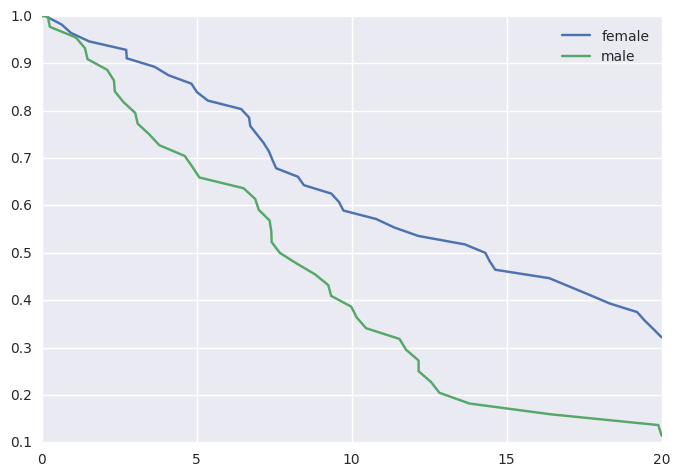
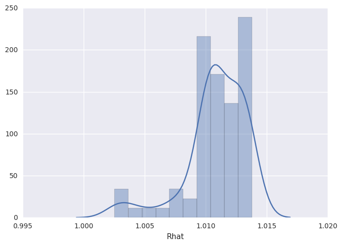
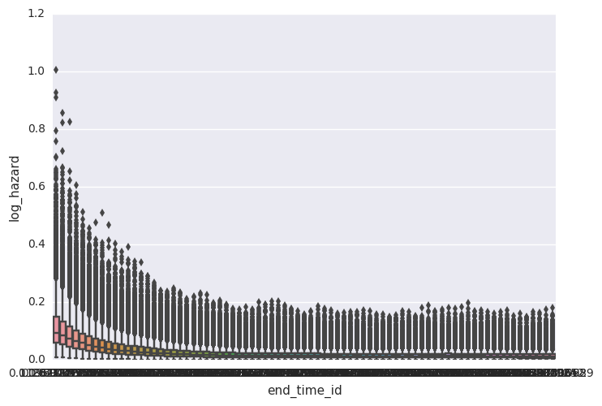
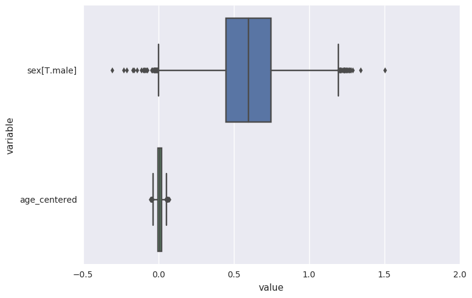
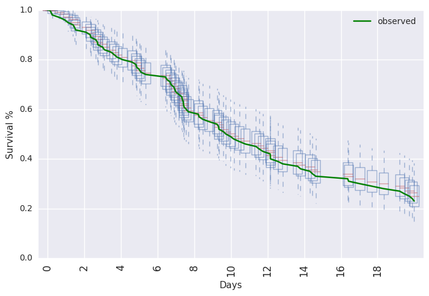
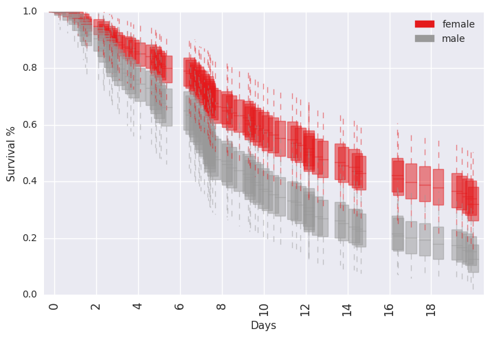

PEM survival model with random-walk baseline hazard¶
In [1]:
%load_ext autoreload
%autoreload 2
%matplotlib inline
import random
random.seed(1100038344)
import survivalstan
import numpy as np
import pandas as pd
from stancache import stancache
from matplotlib import pyplot as plt
The autoreload extension is already loaded. To reload it, use:
%reload_ext autoreload
/home/jacquelineburos/miniconda3/envs/python3/lib/python3.5/site-packages/Cython/Distutils/old_build_ext.py:30: UserWarning: Cython.Distutils.old_build_ext does not properly handle dependencies and is deprecated.
"Cython.Distutils.old_build_ext does not properly handle dependencies "
/home/jacquelineburos/.local/lib/python3.5/site-packages/IPython/html.py:14: ShimWarning: The `IPython.html` package has been deprecated. You should import from `notebook` instead. `IPython.html.widgets` has moved to `ipywidgets`.
"`IPython.html.widgets` has moved to `ipywidgets`.", ShimWarning)
INFO:stancache.seed:Setting seed to 1245502385
In [2]:
model_code = survivalstan.models.pem_survival_model_randomwalk
In [3]:
print(model_code)
/* Variable naming:
// dimensions
N = total number of observations (length of data)
S = number of sample ids
T = max timepoint (number of timepoint ids)
M = number of covariates
// main data matrix (per observed timepoint*record)
s = sample id for each obs
t = timepoint id for each obs
event = integer indicating if there was an event at time t for sample s
x = matrix of real-valued covariates at time t for sample n [N, X]
// timepoint-specific data (per timepoint, ordered by timepoint id)
t_obs = observed time since origin for each timepoint id (end of period)
t_dur = duration of each timepoint period (first diff of t_obs)
*/
// Jacqueline Buros Novik <jackinovik@gmail.com>
data {
// dimensions
int<lower=1> N;
int<lower=1> S;
int<lower=1> T;
int<lower=0> M;
// data matrix
int<lower=1, upper=N> s[N]; // sample id
int<lower=1, upper=T> t[N]; // timepoint id
int<lower=0, upper=1> event[N]; // 1: event, 0:censor
matrix[N, M] x; // explanatory vars
// timepoint data
vector<lower=0>[T] t_obs;
vector<lower=0>[T] t_dur;
}
transformed data {
vector[T] log_t_dur; // log-duration for each timepoint
int n_trans[S, T];
log_t_dur = log(t_obs);
// n_trans used to map each sample*timepoint to n (used in gen quantities)
// map each patient/timepoint combination to n values
for (n in 1:N) {
n_trans[s[n], t[n]] = n;
}
// fill in missing values with n for max t for that patient
// ie assume "last observed" state applies forward (may be problematic for TVC)
// this allows us to predict failure times >= observed survival times
for (samp in 1:S) {
int last_value;
last_value = 0;
for (tp in 1:T) {
// manual says ints are initialized to neg values
// so <=0 is a shorthand for "unassigned"
if (n_trans[samp, tp] <= 0 && last_value != 0) {
n_trans[samp, tp] = last_value;
} else {
last_value = n_trans[samp, tp];
}
}
}
}
parameters {
vector[T] log_baseline_raw; // unstructured baseline hazard for each timepoint t
vector[M] beta; // beta for each covariate
real<lower=0> baseline_sigma;
real log_baseline_mu;
}
transformed parameters {
vector[N] log_hazard;
vector[T] log_baseline;
log_baseline = log_baseline_raw + log_t_dur;
for (n in 1:N) {
log_hazard[n] = log_baseline_mu + log_baseline[t[n]] + x[n,]*beta;
}
}
model {
beta ~ cauchy(0, 2);
event ~ poisson_log(log_hazard);
log_baseline_mu ~ normal(0, 1);
baseline_sigma ~ normal(0, 1);
log_baseline_raw[1] ~ normal(0, 1);
for (i in 2:T) {
log_baseline_raw[i] ~ normal(log_baseline_raw[i-1], baseline_sigma);
}
}
generated quantities {
real log_lik[N];
vector[T] baseline;
int y_hat_mat[S, T]; // ppcheck for each S*T combination
real y_hat_time[S]; // predicted failure time for each sample
int y_hat_event[S]; // predicted event (0:censor, 1:event)
// compute raw baseline hazard, for summary/plotting
baseline = exp(log_baseline_raw);
for (n in 1:N) {
log_lik[n] <- poisson_log_lpmf(event[n] | log_hazard[n]);
}
// posterior predicted values
for (samp in 1:S) {
int sample_alive;
sample_alive = 1;
for (tp in 1:T) {
if (sample_alive == 1) {
int n;
int pred_y;
real log_haz;
// determine predicted value of y
// (need to recalc so that carried-forward data use sim tp and not t[n])
n = n_trans[samp, tp];
log_haz = log_baseline_mu + log_baseline[tp] + x[n,]*beta;
if (log_haz < log(pow(2, 30)))
pred_y = poisson_log_rng(log_haz);
else
pred_y = 9;
// mark this patient as ineligible for future tps
// note: deliberately make 9s ineligible
if (pred_y >= 1) {
sample_alive = 0;
y_hat_time[samp] = t_obs[tp];
y_hat_event[samp] = 1;
}
// save predicted value of y to matrix
y_hat_mat[samp, tp] = pred_y;
}
else if (sample_alive == 0) {
y_hat_mat[samp, tp] = 9;
}
} // end per-timepoint loop
// if patient still alive at max
//
if (sample_alive == 1) {
y_hat_time[samp] = t_obs[T];
y_hat_event[samp] = 0;
}
} // end per-sample loop
}
In [4]:
d = stancache.cached(
survivalstan.sim.sim_data_exp_correlated,
N=100,
censor_time=20,
rate_form='1 + sex',
rate_coefs=[-3, 0.5],
)
d['age_centered'] = d['age'] - d['age'].mean()
d.head()
INFO:stancache.stancache:sim_data_exp_correlated: cache_filename set to sim_data_exp_correlated.cached.N_100.censor_time_20.rate_coefs_54462717316.rate_form_1 + sex.pkl
INFO:stancache.stancache:sim_data_exp_correlated: Loading result from cache
Out[4]:
| age | sex | rate | true_t | t | event | index | age_centered | |
|---|---|---|---|---|---|---|---|---|
| 0 | 59 | male | 0.082085 | 20.948771 | 20.000000 | False | 0 | 4.18 |
| 1 | 58 | male | 0.082085 | 12.827519 | 12.827519 | True | 1 | 3.18 |
| 2 | 61 | female | 0.049787 | 27.018886 | 20.000000 | False | 2 | 6.18 |
| 3 | 57 | female | 0.049787 | 62.220296 | 20.000000 | False | 3 | 2.18 |
| 4 | 55 | male | 0.082085 | 10.462045 | 10.462045 | True | 4 | 0.18 |
In [5]:
survivalstan.utils.plot_observed_survival(df=d[d['sex']=='female'], event_col='event', time_col='t', label='female')
survivalstan.utils.plot_observed_survival(df=d[d['sex']=='male'], event_col='event', time_col='t', label='male')
plt.legend()
Out[5]:
<matplotlib.legend.Legend at 0x7f5317b03cf8>

In [6]:
dlong = stancache.cached(
survivalstan.prep_data_long_surv,
df=d, event_col='event', time_col='t'
)
INFO:stancache.stancache:prep_data_long_surv: cache_filename set to prep_data_long_surv.cached.df_33772694934.event_col_event.time_col_t.pkl
INFO:stancache.stancache:prep_data_long_surv: Loading result from cache
In [7]:
dlong.head()
Out[7]:
| age | sex | rate | true_t | t | event | index | age_centered | key | end_time | end_failure | |
|---|---|---|---|---|---|---|---|---|---|---|---|
| 0 | 59 | male | 0.082085 | 20.948771 | 20.0 | False | 0 | 4.18 | 1 | 20.000000 | False |
| 1 | 59 | male | 0.082085 | 20.948771 | 20.0 | False | 0 | 4.18 | 1 | 12.827519 | False |
| 2 | 59 | male | 0.082085 | 20.948771 | 20.0 | False | 0 | 4.18 | 1 | 10.462045 | False |
| 3 | 59 | male | 0.082085 | 20.948771 | 20.0 | False | 0 | 4.18 | 1 | 0.196923 | False |
| 4 | 59 | male | 0.082085 | 20.948771 | 20.0 | False | 0 | 4.18 | 1 | 9.244121 | False |
In [8]:
testfit = survivalstan.fit_stan_survival_model(
model_cohort = 'test model',
model_code = model_code,
df = dlong,
sample_col = 'index',
timepoint_end_col = 'end_time',
event_col = 'end_failure',
formula = '~ age_centered + sex',
iter = 5000,
chains = 4,
seed = 9001,
FIT_FUN = stancache.cached_stan_fit,
)
INFO:stancache.stancache:Step 1: Get compiled model code, possibly from cache
INFO:stancache.stancache:StanModel: cache_filename set to anon_model.cython_0_25_1.model_code_15125303112.pystan_2_12_0_0.stanmodel.pkl
INFO:stancache.stancache:StanModel: Loading result from cache
INFO:stancache.stancache:Step 2: Get posterior draws from model, possibly from cache
INFO:stancache.stancache:sampling: cache_filename set to anon_model.cython_0_25_1.model_code_15125303112.pystan_2_12_0_0.stanfit.chains_4.data_89490385305.iter_5000.seed_9001.pkl
INFO:stancache.stancache:sampling: Starting execution
INFO:stancache.stancache:sampling: Execution completed (0:11:49.722646 elapsed)
INFO:stancache.stancache:sampling: Saving results to cache
/home/jacquelineburos/miniconda3/envs/python3/lib/python3.5/site-packages/stancache/stancache.py:251: UserWarning: Pickling fit objects is an experimental feature!
The relevant StanModel instance must be pickled along with this fit object.
When unpickling the StanModel must be unpickled first.
pickle.dump(res, open(cache_filepath, 'wb'), pickle.HIGHEST_PROTOCOL)
/home/jacquelineburos/miniconda3/envs/python3/lib/python3.5/site-packages/stanity/psis.py:228: FutureWarning: elementwise comparison failed; returning scalar instead, but in the future will perform elementwise comparison
elif sort == 'in-place':
/home/jacquelineburos/miniconda3/envs/python3/lib/python3.5/site-packages/stanity/psis.py:246: VisibleDeprecationWarning: using a non-integer number instead of an integer will result in an error in the future
bs /= 3 * x[sort[np.floor(n/4 + 0.5) - 1]]
/home/jacquelineburos/miniconda3/envs/python3/lib/python3.5/site-packages/stanity/psis.py:262: RuntimeWarning: overflow encountered in exp
np.exp(temp, out=temp)
In [9]:
survivalstan.utils.print_stan_summary([testfit], pars='lp__')
mean se_mean sd 2.5% 50% 97.5% Rhat
lp__ -299.460663 1.927055 26.352078 -347.240375 -301.398746 -241.969884 1.024231
In [10]:
survivalstan.utils.print_stan_summary([testfit], pars='log_baseline_raw')
mean se_mean sd 2.5% 50% 97.5% Rhat
log_baseline_raw[0] -2.209853 0.034962 0.734208 -3.565018 -2.224091 -0.741190 1.002523
log_baseline_raw[1] -2.304993 0.034925 0.723383 -3.649586 -2.321536 -0.871592 1.002825
log_baseline_raw[2] -2.421687 0.034973 0.714164 -3.764226 -2.433190 -0.983894 1.003320
log_baseline_raw[3] -2.557284 0.034873 0.708698 -3.931550 -2.562017 -1.136746 1.004044
log_baseline_raw[4] -2.689425 0.035061 0.709934 -4.057182 -2.689985 -1.251838 1.005177
log_baseline_raw[5] -2.813966 0.036343 0.717710 -4.206290 -2.816301 -1.371240 1.006522
log_baseline_raw[6] -2.932749 0.037675 0.727616 -4.344685 -2.932417 -1.462858 1.007257
log_baseline_raw[7] -3.040481 0.038382 0.735284 -4.483020 -3.043742 -1.547476 1.007836
log_baseline_raw[8] -3.142247 0.039402 0.743432 -4.567630 -3.151716 -1.609923 1.008075
log_baseline_raw[9] -3.238616 0.039946 0.751576 -4.693920 -3.248983 -1.687828 1.008705
log_baseline_raw[10] -3.326796 0.040820 0.759294 -4.797918 -3.344459 -1.765842 1.009117
log_baseline_raw[11] -3.405642 0.041976 0.767142 -4.887675 -3.406443 -1.848447 1.010037
log_baseline_raw[12] -3.476969 0.042417 0.772868 -4.974952 -3.463678 -1.899816 1.011136
log_baseline_raw[13] -3.542576 0.042853 0.779642 -5.057991 -3.535582 -1.934427 1.011025
log_baseline_raw[14] -3.604198 0.043344 0.781402 -5.132122 -3.598852 -1.993619 1.011672
log_baseline_raw[15] -3.663888 0.043606 0.782475 -5.185663 -3.665758 -2.050194 1.011964
log_baseline_raw[16] -3.717827 0.043542 0.781329 -5.245613 -3.724172 -2.108292 1.012058
log_baseline_raw[17] -3.772938 0.043684 0.780217 -5.290728 -3.768361 -2.185687 1.012156
log_baseline_raw[18] -3.824103 0.043831 0.782841 -5.319356 -3.824092 -2.233574 1.012159
log_baseline_raw[19] -3.871339 0.044298 0.787467 -5.402883 -3.869259 -2.247521 1.013038
log_baseline_raw[20] -3.918442 0.044859 0.791091 -5.452807 -3.922432 -2.303807 1.013615
log_baseline_raw[21] -3.964726 0.044814 0.791565 -5.483688 -3.960975 -2.337881 1.013660
log_baseline_raw[22] -4.004692 0.045198 0.793219 -5.552627 -4.003068 -2.386289 1.013792
log_baseline_raw[23] -4.041575 0.045697 0.795442 -5.578184 -4.045911 -2.413009 1.013758
log_baseline_raw[24] -4.074303 0.045213 0.792187 -5.603216 -4.069042 -2.451408 1.013534
log_baseline_raw[25] -4.106607 0.044978 0.794469 -5.661048 -4.102975 -2.479499 1.013116
log_baseline_raw[26] -4.139667 0.044627 0.795811 -5.689198 -4.140985 -2.492719 1.012234
log_baseline_raw[27] -4.172902 0.044663 0.796452 -5.717805 -4.172481 -2.519271 1.012157
log_baseline_raw[28] -4.203341 0.045068 0.796062 -5.748268 -4.198260 -2.547859 1.012530
log_baseline_raw[29] -4.225360 0.045499 0.795909 -5.764089 -4.225801 -2.574596 1.013533
log_baseline_raw[30] -4.244890 0.045181 0.796781 -5.799618 -4.244009 -2.570214 1.013194
log_baseline_raw[31] -4.260373 0.045487 0.796995 -5.841010 -4.259303 -2.602916 1.013388
log_baseline_raw[32] -4.272444 0.045207 0.794659 -5.828616 -4.266997 -2.627563 1.013189
log_baseline_raw[33] -4.284438 0.045231 0.793800 -5.840478 -4.281586 -2.627900 1.013242
log_baseline_raw[34] -4.295121 0.045215 0.793523 -5.857232 -4.285296 -2.668900 1.012945
log_baseline_raw[35] -4.302797 0.045207 0.793372 -5.856606 -4.298698 -2.686706 1.012605
log_baseline_raw[36] -4.306231 0.045391 0.791416 -5.829722 -4.300618 -2.678529 1.013334
log_baseline_raw[37] -4.311709 0.044862 0.791156 -5.867720 -4.301373 -2.673927 1.012985
log_baseline_raw[38] -4.315251 0.044282 0.789655 -5.853074 -4.303313 -2.701019 1.012537
log_baseline_raw[39] -4.317223 0.044279 0.788357 -5.855086 -4.306719 -2.703429 1.012997
log_baseline_raw[40] -4.318599 0.044355 0.788473 -5.861453 -4.314772 -2.702005 1.013257
log_baseline_raw[41] -4.323167 0.044185 0.784199 -5.835683 -4.319204 -2.697464 1.013198
log_baseline_raw[42] -4.328650 0.043971 0.781649 -5.863121 -4.322219 -2.714264 1.012836
log_baseline_raw[43] -4.331192 0.043861 0.780927 -5.868070 -4.329463 -2.730403 1.013090
log_baseline_raw[44] -4.335847 0.043651 0.778409 -5.853302 -4.326692 -2.744025 1.012835
log_baseline_raw[45] -4.340444 0.043448 0.779641 -5.840163 -4.333709 -2.749720 1.012509
log_baseline_raw[46] -4.345613 0.043007 0.780068 -5.842220 -4.334844 -2.755490 1.011630
log_baseline_raw[47] -4.347367 0.043069 0.780010 -5.863569 -4.332582 -2.765254 1.011127
log_baseline_raw[48] -4.348232 0.042741 0.777596 -5.871084 -4.335639 -2.797367 1.011092
log_baseline_raw[49] -4.350068 0.042516 0.778174 -5.881712 -4.336420 -2.780095 1.010770
log_baseline_raw[50] -4.349913 0.042314 0.779078 -5.911215 -4.336043 -2.767829 1.010429
log_baseline_raw[51] -4.349424 0.042508 0.776856 -5.900156 -4.341521 -2.785123 1.010256
log_baseline_raw[52] -4.348648 0.042346 0.777374 -5.876766 -4.337048 -2.768534 1.010006
log_baseline_raw[53] -4.347363 0.042586 0.779449 -5.891009 -4.328330 -2.775428 1.009957
log_baseline_raw[54] -4.350424 0.042582 0.778207 -5.886586 -4.336106 -2.773579 1.010369
log_baseline_raw[55] -4.347044 0.042418 0.778689 -5.890802 -4.328797 -2.769821 1.010304
log_baseline_raw[56] -4.348723 0.042249 0.776741 -5.864335 -4.333924 -2.775254 1.009930
log_baseline_raw[57] -4.345926 0.042328 0.777045 -5.881462 -4.329267 -2.749512 1.010466
log_baseline_raw[58] -4.345933 0.042102 0.777455 -5.886590 -4.327736 -2.743760 1.010318
log_baseline_raw[59] -4.341379 0.042107 0.775280 -5.856886 -4.317274 -2.750124 1.010689
log_baseline_raw[60] -4.337038 0.041876 0.774429 -5.838974 -4.321691 -2.772782 1.010865
log_baseline_raw[61] -4.332934 0.041668 0.771707 -5.838879 -4.315197 -2.757346 1.011286
log_baseline_raw[62] -4.331704 0.041587 0.770194 -5.839632 -4.316723 -2.752762 1.010277
log_baseline_raw[63] -4.331096 0.041297 0.768172 -5.833093 -4.316674 -2.751622 1.010207
log_baseline_raw[64] -4.330946 0.041052 0.766915 -5.803078 -4.326373 -2.758759 1.010366
log_baseline_raw[65] -4.334928 0.041518 0.767797 -5.795742 -4.324844 -2.750788 1.010279
log_baseline_raw[66] -4.337154 0.041747 0.766377 -5.830106 -4.329792 -2.765804 1.010298
log_baseline_raw[67] -4.341754 0.041943 0.767691 -5.835078 -4.344604 -2.768967 1.010708
log_baseline_raw[68] -4.350062 0.042011 0.770077 -5.852077 -4.336741 -2.776915 1.010704
log_baseline_raw[69] -4.356494 0.042362 0.773027 -5.904633 -4.337998 -2.797574 1.010953
log_baseline_raw[70] -4.366050 0.042435 0.777850 -5.899477 -4.346893 -2.794871 1.010286
log_baseline_raw[71] -4.375275 0.042612 0.778763 -5.913698 -4.357084 -2.799853 1.010616
log_baseline_raw[72] -4.388638 0.042797 0.780964 -5.930415 -4.370979 -2.796530 1.010651
log_baseline_raw[73] -4.400346 0.043051 0.786794 -5.962885 -4.386232 -2.794786 1.010310
log_baseline_raw[74] -4.418921 0.043276 0.794434 -5.998846 -4.402173 -2.820150 1.009907
log_baseline_raw[75] -4.438898 0.043396 0.803697 -6.046008 -4.423531 -2.809893 1.010078
log_baseline_raw[76] -4.458039 0.043689 0.816187 -6.075599 -4.441154 -2.802135 1.009674
log_baseline_raw[77] -4.485210 0.044765 0.837476 -6.172687 -4.468687 -2.803093 1.010143
In [11]:
survivalstan.utils.plot_stan_summary([testfit], pars='log_baseline_raw')

In [12]:
survivalstan.utils.plot_coefs([testfit], element='baseline')

In [13]:
survivalstan.utils.plot_coefs([testfit])

In [14]:
survivalstan.utils.plot_pp_survival([testfit], fill=False)
survivalstan.utils.plot_observed_survival(df=d, event_col='event', time_col='t', color='green', label='observed')
plt.legend()
Out[14]:
<matplotlib.legend.Legend at 0x7f523338dc50>

In [15]:
survivalstan.utils.plot_pp_survival([testfit], by='sex')

In [16]: